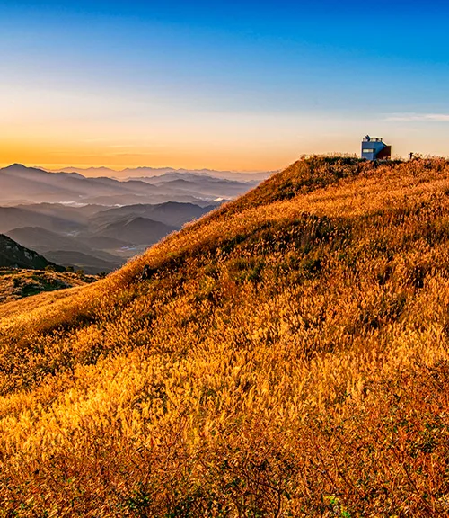
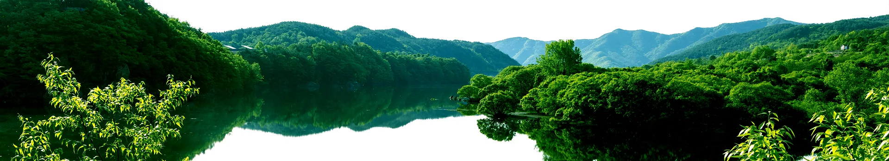
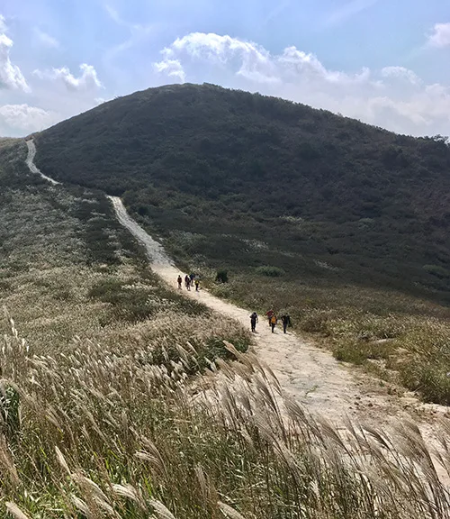
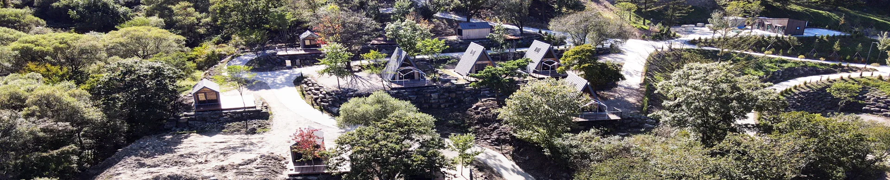
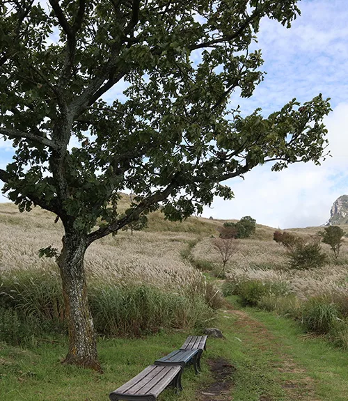
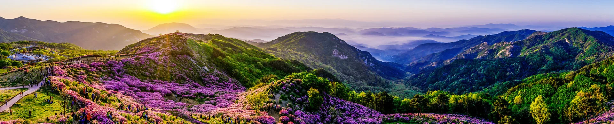
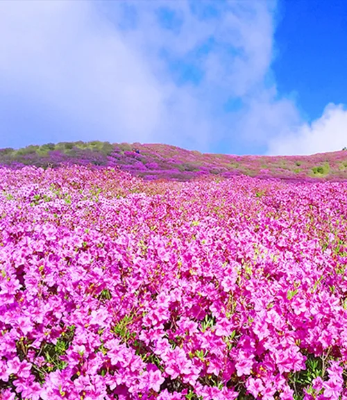
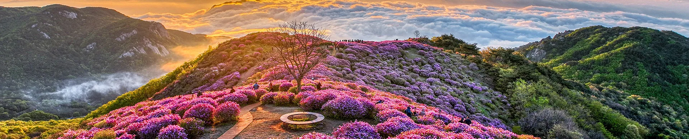

▲ 노을에 물든 황매산 억새 능선. 해 질 무렵 정상부 전망대 일대가 가장 붐빈다. 사진=합천군 황매산군립공원 홈페이지
1. 1년에 두 번 절정을 맞는 산
경남 합천군 가회면과 산청군 차황면에 걸친 황매산(黃梅山, 해발 1,113m)은 1년에 두 번 전국구 명소가 된다. 5월엔 해발 800~900m 고원 지대인 황매평전을 진분홍빛 철쭉이 뒤덮고, 10월엔 같은 자리가 은빛 억새 물결로 바뀐다. 산 이름은 합천호 수면에 비친 산의 모습이 물에 뜬 매화 같다는 데서 유래했다는 이야기가 전해지며, 이 때문에 '수중매(水中梅)'라는 별칭으로도 불린다.

▲ 황매산 자락과 맞닿은 합천호. 호수에 비친 산 그림자가 매화 같다 하여 '수중매'라는 별칭이 붙었다. 사진=합천군 황매산군립공원 홈페이지
카프리즘이 이 산을 주목한 이유는 같은 임도, 같은 정상 주차장인데도 계절에 따라 차량 통제 방식이 완전히 달라진다는 점이다. 봄 철쭉철엔 셔틀버스 중심으로 운영되지만, 가을 억새철엔 자차 진입 의존도가 훨씬 높아진다. 왜 이런 차이가 생기는지, 이번 가을 억새 여행을 계획 중인 운전자라면 무엇을 알아둬야 하는지 계절별로 나란히 비교했다.
2. 봄 철쭉철 — 셔틀버스가 주인공인 이유
2026년 황매산철쭉제(제30회)는 5월 1일(금)부터 5월 10일(일)까지 10일간 열린다. 먹거리 부스는 4월 25일부터 5월 17일까지로 더 길게 운영된다. 철쭉제례 식전공연, 철쭉콘서트, 스탬프투어, 나눔카트 투어 등 프로그램이 이 기간에 집중된다.
핵심은 셔틀버스다. 4월 25·26일, 5월 1~10일, 16·17일에 걸쳐 09시~17시 동안 셔틀버스가 덕만 주차장과 은행나무 주차장을 순환 운행하며, 요금은 편도 2,500원이다. 산청 방면에서 접근하는 경우 신촌마을에 대형버스 전용 주차장이 별도로 마련돼 있고, 무장애 나눔길이 잘 조성돼 있어 유모차나 노약자 동반 방문객도 접근이 쉽다.
봄철 방문 팁 — 합천·산청 양쪽 모두 오전 10시 이후엔 주차장이 만차에 가까워진다는 보고가 많다. 오전 8시 이전 도착이 가장 안전한 선택이고, 정상 주차장은 성수기엔 유료 전환은 물론 상황에 따라 차량 통제가 걸릴 수 있어 애초에 셔틀 이용을 전제로 동선을 짜는 편이 낫다. 철쭉제 상세 일정 공식 홈페이지에서 확인 가능
3. 가을 억새철 — 자차가 주인공인 이유
억새는 통상 9월 말부터 10월 중순 사이 절정을 이루고, 축제가 끝난 뒤에도 11월 초까지는 감상이 가능하다. 황매산 억새축제는 매년 회차를 거듭하고 있는데, 2024년 제3회는 10월 5일~13일(9일간), 2025년 제4회는 10월 18일~26일(9일간) 열렸다. 이 패턴대로라면 2026년 억새축제도 10월 중 9일 안팎으로 열릴 가능성이 크지만, 정확한 회차·날짜는 매년 8~9월에 확정 공지되므로 방문 직전 공식 홈페이지 공지사항을 다시 확인하는 게 안전하다.
가을철 셔틀버스는 봄철과 확연히 다르게 운영된다. 평일엔 운행하지 않고, 주말·공휴일에만 버스 2대가 덕만 주차장과 은행나무 주차장 사이를 10시~17시 오간다(편도 2,000원 수준). 즉 평일 방문객은 사실상 자차로 임도를 타고 올라가는 것이 기본값이 된다. 정상 부근 주차장(해발 약 850m)까지는 차량으로 거리의 90% 가까이 오를 수 있어, 등산 장비 없이도 억새평원 코앞까지 진입이 가능하다.

▲ 억새 사이로 난 탐방로를 따라 정상으로 향하는 방문객들. 10월 중순이면 이 길 전체가 은빛으로 물든다. 사진=합천군 황매산군립공원 홈페이지
4. 봄 vs 가을, 한눈에 비교하면
| 구분 | 봄 철쭉철 (2026년 5/1~5/10 축제) | 가을 억새철 (통상 10월 축제) |
|---|---|---|
| 절정 시기 | 5월 초순 | 9월 말~10월 중순 |
| 축제 기간 | 10일간(먹거리부스는 더 길게) | 9일 안팎(연도별 상이) |
| 셔틀버스 | 축제 기간 매일 09~17시 운행 | 주말·공휴일 2대만 운행, 평일 미운행 |
| 주 이동 수단 | 셔틀버스 중심(덕만↔은행나무) | 자차 임도 진입 중심 |
| 정상 주차장 | 성수기 유료 전환, 통제 가능성 있음 | 상시 진입 가능(성수기 요금 적용) |
| 혼잡 시간대 | 오전 10시 이후 만차 보고 다수 | 주말·일출·일몰 시간대 집중 |
| 축제 후 감상 | 축제 종료 후 급격히 시듦 | 축제 종료 후에도 11월 초까지 감상 가능 |
표에서 보듯 가을철은 '평일엔 사실상 무통제 자차 진입, 주말엔 혼잡'이라는 구조에 가깝다. 봄철에 정착된 셔틀 중심 운영이 가을엔 주말·공휴일로만 축소되는 셈인데, 이는 억새축제 방문객 수가 철쭉제보다 상대적으로 분산돼 있고 평일 수요가 적기 때문으로 풀이된다. 실제로 2025년 제4회 억새축제는 9일간 6만 명이 넘는 관람객을 모았는데, 이는 대부분 주말에 집중된 수치다.
5. 주차 요금 체계 — 성수기 정의부터 알아야 한다
황매산군립공원은 요금을 '비수기'와 '성수기'로 나눠 적용한다. 성수기는 봄철 4월 셋째 주 토요일~5월 셋째 주 일요일, 가을철은 10월 한 달 전체로 정의돼 있다. 즉 축제 기간이 아니어도 10월에 방문하면 성수기 요금이 적용된다.
| 구분 | 비수기 | 성수기(봄 4월 셋째 주~5월 셋째 주, 가을 10월) |
|---|---|---|
| 소형차 (기본 4시간) | 4,000원 | 5,000원 |
| 대형차(16인승 이상) | 10,000원 | 10,000원 |
| 초과 요금(시간당) | 1,000원 | 2,000원 |
합천군민, 국가유공자, 장애인 차량은 사전등록 시 주차료가 면제된다. 주차 요금·면제 대상 공식 홈페이지에서 확인 가능
6. 정상까지 가는 세 갈래 길 — 모산재·정상주차장·산청 최단코스
차로 정상 턱밑까지 오를 수 있다지만, 도보 구간과 등산코스도 함께 알아두면 동선을 짜기 쉽다.
| 코스 | 거리·시간 | 난이도 | 특징 |
|---|---|---|---|
| 모산재 원점회귀(기적길) | 약 4.5km, 약 3시간 | 초보~중급 | 오토캠핑장에서 출발, 돛대바위·무지개터 등 기암괴석 경유, 모산재(767m) 정상 조망 |
| 정상 주차장 왕복 | 약 2.9km, 약 2시간 | 초보~중급 | 데크계단·전망대 완비, 억새·철쭉 군락 최단 접근 |
| 산청 미리내 최단코스 | 약 1.1km 편도, 30~40분 | 중급 | 600개 이상 가파른 계단, 체력 소모 큼, 무장애 나눔길과 별도 |
모산재 주차장은 무료이며 전기차 충전소와 화장실을 갖추고 있어 가장 부담 없는 출발점으로 꼽힌다. 반면 정상 주차장은 성수기엔 유료로 전환되고 차량 통제가 걸릴 수 있다는 점에서 앞서 설명한 계절별 통제 시스템과 같은 맥락에 있다.

▲ 정상 인근 황매산 별쿵 오토캠핑장 전경. 철쭉·억새 시즌에는 예약이 가장 먼저 마감되는 시설이다. 사진=합천군 황매산군립공원 홈페이지
해발 850m에 자리한 황매산 별쿵 오토캠핑장은 철쭉·억새 시즌 모두 예약 경쟁이 치열한 곳이다. 정상 주차장과 가까워 차박이나 캠핑을 겸해 방문하는 이들이 많은데, 캠핑장 이용객도 결국 같은 임도와 주차 체계 안에서 움직인다는 점은 동일하다.

▲ 억새밭 사이 벤치와 나무 한 그루. 정상 부근 탐방로에서 잠시 쉬어갈 수 있는 지점이다. 사진=합천군 황매산군립공원 홈페이지
7. 봄 사진과 가을 사진, 같은 자리가 이렇게 다르다
같은 황매평전이라도 계절에 따라 풍경과 인파가 이동하는 방향이 다르다. 봄엔 진분홍 철쭉 군락이 능선을 뒤덮고 이른 아침·노을 시간대에 방문객이 몰리는 반면, 가을엔 황금빛 억새가 바람에 파도치듯 일렁이는 모습이 포인트다.

▲ 해돋이와 함께 붉게 물든 철쭉 능선. 왼쪽 아래로 전망대와 탐방로에 이른 시간부터 방문객이 모여 있다. 사진=합천군 황매산군립공원 홈페이지

▲ 황매평전을 가득 채운 진분홍빛 철쭉 군락. 매년 5월 초 절정을 이룬다. 사진=합천군 황매산군립공원 홈페이지
억새 트레킹은 초보자 코스와 고급 코스로 나뉜다. 정상 주차장에서 억새 군락지까지는 약 1.5km 완만한 경사로로 누구나 걸을 수 있고, 체력에 자신 있다면 황매산성에서 정상을 거쳐 억새평원까지 능선을 타는 코스도 있다. 촬영 명소로는 일출·일몰 시간대가 가장 인기가 높고, 밤엔 별빛 사진을 남기려는 방문객도 적지 않다.

▲ 노을과 운해가 만든 철쭉 능선 풍경. 정상 인근 전망 데크에 방문객들이 모여 있다. 사진=합천군 황매산군립공원 홈페이지
8. 방문 전 체크리스트
- 억새 절정 — 9월 말~10월 중순, 축제 종료 후에도 11월 초까지 감상 가능
- 평일 방문 시 — 셔틀버스가 운행하지 않으므로 자차로 정상 주차장까지 직접 이동해야 한다
- 주말·공휴일 — 덕만↔은행나무 주차장 셔틀버스(10~17시) 이용 가능, 오전 일찍 도착 권장
- 주차 요금 — 10월은 전체가 성수기로 분류돼 소형차 기본 4시간 5,000원이 적용된다
- 정확한 축제 일정 — 매년 다르게 확정되므로 방문 직전 공식 홈페이지·경남축제다모아 공지를 재확인할 것
- 문의 — 황매산군립공원 관리사무소 055-930-4769
요약
황매산은 5월 철쭉과 10월 억새로 1년에 두 번 절정을 맞지만, 같은 임도·같은 정상 주차장이라도 계절에 따라 통제 방식이 다르다. 봄엔 축제 기간 내내 셔틀버스가 촘촘히 운행돼 자차보다 셔틀 이용이 사실상 기본값이지만, 가을엔 평일 셔틀이 아예 없어 자차로 정상 주차장까지 직접 오르는 것이 기본 동선이 된다. 10월은 통째로 성수기 요금이 적용되고, 억새 절정은 9월 말~10월 중순이지만 축제가 끝난 뒤에도 11월 초까지는 감상할 수 있다. 정확한 축제 일정과 통제 여부는 매년 달라지므로 방문 직전 공식 홈페이지 공지를 다시 확인하는 것이 가장 안전하다.